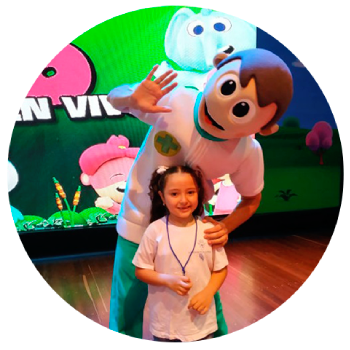

¡Puedes Ayudar y Donar de Muchas Formas!
1. Plan Padrino
Reporte Anual
Sobre el progreso del niño. En los distintos aspectos en lo que se le a logrado ayudar.
Informe Mensual
Sobre la manera en la que sus contribuciones están impactando las vidas de niños necesitados y las de sus familias, el cual sera enviado a su correo electronico.
Al convertirte en Padrino recibirás

Carnet
Que lo acredita como PADRINO de la Fundacion Unidos Por la Vida.
Tarjetas
De celebración personalizadas, que podrá enviarle a su niño patrocinado en ocasiones especiales como cumpleaños, día del niño, entre otros.
2. Programa de Voluntariado
Voluntariado Permanente
Consiste en participar de manera permanente en las diferentes campañas y programas de nuestra fundación, a cambio recibirás una bonificacion económica equivalente al salario mínimo legal vigente
Voluntariado Temporal
Cuando realizamos un evento necesitamos de muchas manos amigas que quieran brindarnos su apoyo, si tu deseo es ayudar e interactuar con los niños de nuestra fundación de invitamos a visitar nuestra página web, redes sociales y revisar la convocatorias
Donaciones en Dinero
Puedes escanear el código QR si tienes cuenta en Bancolombia, o hacer clic en el botón abajo para realizar el pago en línea.
Donaciones en Especie
Ropa
Puedes donar ropa nueva o usada en buenas condiciones para nuestros niños y jóvenes
Juguetes
Juguetes para niño o niña de cualquier edad son agradecidos por nuestros niños.
Tecnologia
Si tienes computadores o tablets, puedes facilitar el acceso al estudio y entretenimiento de los niños.